Control de Versiones
| Versión | Fecha | Descripción del Cambio | Autor/Revisor |
|---|---|---|---|
| 1.0.0 | 15/05/2025 | Extracción inicial PDF. | Ingeniería |
| 2.0.0 | 22/05/2025 | Expansión de Capítulos Técnicos. | Depto. Técnico |
| 3.0.0 | 22/05/2025 | Rediseño profesional, flujos y casos reales. | Operaciones |
Tabla de Contenido
- Cubierta y Tabla de Contenido
- Introducción Técnica
- Glosario de Términos y Conceptos Claves
- Arquitectura de Hardware: Modelos de GPS
- Fundamentos de Electrónica Vehicular
- Herramientas y Equipo de Medición
- Protocolo de Inspección y Recepción del Vehículo
- Medidas de Seguridad Personal y Vehicular
- Prevención de Accidentes
- Prevención de Cortocircuito y Manejo de Herramientas
- Ensamble del Arnés Eléctrico
- Configuración y Conexión de Relés (Corte de Ignición)
- Técnicas de Empalme y Encintado
- Uso de Terminales Remachables
- Instalación de Periféricos: Botón de Pánico y Sensores
- Identificación Avanzada de Conductores y Señales
- Electrónica Automotriz Moderna: Redes CAN/LIN
- Casos Especiales: Híbridos y Start-Stop
- Diagnóstico Técnico y Resolución de Fallas
- Estándares de Calidad y Protocolo de Entrega
- Experiencia de Campo y Casos Reales
Fundamentos y Conocimientos Previos (Presaberes)
Configuración via SMS (Ejemplos Estándar)
Antes de que el equipo reporte a plataforma, se debe configurar via SMS:
- APN:
AT+APN=nombre.apn,usuario,clave(Permite salida a internet). - Servidor/IP:
AT+SERVER=1,ip.del.servidor,puerto(Destino de los datos). - Frecuencia:
AT+REPORT=frecuencia_segundos(Intervalo de envío).
GPS vs. Rastreador (Tracker)
Un navegador GPS sólo recibe señales. Un Rastreador recibe y transmite datos via celular (GSM/LTE). Sin SIM o cobertura, el equipo no reporta.
- GNSS: Constelaciones GPS (EEUU), GLONASS (Rusia), Galileo (UE) y BeiDou (China).
- A-GPS: Usa la red celular para acelerar la fijación de satélites (TTFF).
- Identificadores: IMEI (Serie del equipo) e ICCID (Serie del SIM).
Antes de proceder con la práctica de instalación, es imperativo que el técnico domine los conceptos fundamentales de los sistemas de rastreo y seguridad vehicular. A diferencia de los navegadores GPS convencionales, los dispositivos abordados en este manual son unidades de telemática diseñadas para el monitoreo de ubicación, rastreo en tiempo real, inmovilización remota y gestión de flotas.
-
Posicionamiento Híbrido y Comunicación:
Estos equipos no dependen exclusivamente de la señal satelital GPS. Funcionan mediante una arquitectura de tres pilares:
- GNSS (GPS/GLONASS): Captación de señales satelitales para obtener coordenadas de alta precisión.
- Redes Móviles (GSM/LTE): Uso de módem celular integrado para transmitir los datos recolectados hacia servidores centrales y recibir comandos de control.
- LBS (Location Based Services): Triangulación por antenas de telefonía móvil, que permite obtener una ubicación aproximada incluso en lugares sin visión al cielo (sótanos, túneles) donde el GPS pierde señal.
- Interacción de Sistemas y Seguridad: La unidad de rastreo procesa constantemente las coordenadas y el estado de los sensores (ignición, pánico). Esta información es enviada mediante la red celular hacia una plataforma de monitoreo. En caso de requerir seguridad activa, la plataforma envía un comando de vuelta al dispositivo que, mediante un relé externo, permite la inmovilización o apagado remoto del vehículo de forma segura.
- Electrónica Automotriz: Se requiere comprensión profunda de la Ley de Ohm, identificación de circuitos (ignición, accesorios, constante) y el uso correcto del multímetro y probador de línea.
- Sistemas del Vehículo: Conocimiento de la arquitectura eléctrica, ubicación de cajas de fusibles y protocolos de desarmado de interiores para evitar daños estéticos o estructurales.
Este manual técnico ha sido desarrollado como una guía integral para los nuevos técnicos especializados en la instalación, configuración y mantenimiento de sistemas de rastreo y seguridad vehicular. A diferencia de la navegación convencional, estos dispositivos integran tecnologías de posicionamiento satelital con comunicaciones móviles GSM/LTE para permitir el monitoreo en tiempo real, la gestión de flotas y funciones de seguridad activa como la inmovilización remota. En el contexto actual, la precisión en la instalación es crítica no solo para la funcionalidad del dispositivo, sino también para la integridad eléctrica y mecánica del vehículo.
A lo largo de este documento, el aspirante encontrará desde los fundamentos de la electrónica automotriz hasta procedimientos avanzados de diagnóstico. Nuestro objetivo primordial es asegurar que cada técnico adquiera las competencias necesarias para realizar instalaciones limpias, seguras y altamente efectivas, minimizando riesgos y maximizando la vida útil de los equipos instalados.
La capacitación abarca el manejo de herramientas especializadas, la interpretación de diagramas complejos y la aplicación de protocolos de seguridad rigurosos. Al finalizar este manual, se incluye una sección dedicada a las particularidades de los vehículos con los que operamos habitualmente, proporcionando un conocimiento práctico directo para el campo de trabajo.
Términos y Conceptos Claves
Al momento de realizar un trabajo se debe de conocer los términos y conceptos claves que se utilizan en el ámbito del técnico instalador de GPS.
- 1. Instalación Nueva: Proceso de montar y configurar un dispositivo GPS por primera vez en un vehículo o equipo. Esto incluye la conexión del dispositivo a la fuente de alimentación y la integración con el sistema eléctrico del vehículo.
- 2. Desinstalación: Procedimiento para retirar un dispositivo GPS previamente instalado. Este proceso debe hacerse cuidadosamente para evitar dañar el vehículo o el propio dispositivo.
- 3. Reinstalación: Implica volver a instalar un dispositivo GPS que ha sido desinstalado. Esto puede requerir ajustes en el cableado y la configuración del dispositivo.
- 4. Traspaso: Proceso mediante el cual se transfiere un dispositivo GPS de un vehículo a otro. Este procedimiento puede implicar la desinstalación del GPS del primer vehículo y su reinstalación en el nuevo, así como la actualización de la información de configuración y usuario en el sistema del dispositivo. Es importante asegurarse de que todas las configuraciones y datos previos se transfieran correctamente para mantener la funcionalidad y la continuidad en el seguimiento.
- 5. Homologación: Verificación de que el equipo instalado cumple con los estándares técnicos y protocolos de comunicación requeridos por la plataforma de monitoreo y la normativa local.
- 6. Revisión por Falla: Inspección y diagnóstico de un dispositivo GPS que no está funcionando correctamente. Esto puede incluir pruebas de conexión, verificación de configuración y análisis de posibles daños en el equipo.
- 7. Revisión Preventiva: (Mantenimiento preventivo) Mantenimiento programado para asegurar que el dispositivo GPS funcione de manera óptima. Incluye la verificación de conexiones, actualizaciones de software y comprobación del estado general del sistema.
- 8. Bloqueo de Motor (Apagado Remoto): Función que permite al usuario desactivar el motor de un vehículo de forma remota a través de la plataforma del GPS. Esta característica es especialmente útil en casos de robo.
- 9. Apertura de Seguros: Opción que permite desbloquear o abrir las puertas de un vehículo a distancia mediante el sistema GPS. Esto se puede hacer a través de una aplicación móvil o un comando remoto.
- 10. Botón de Pánico: Dispositivo de seguridad que, al ser activado, envía una señal de alerta a un centro de monitoreo o a contactos predeterminados. Este botón es esencial para situaciones de emergencia.
- 11. Ubicación y Telemática: Capacidad de determinar la posición exacta mediante GNSS y transmitir datos de sensores del vehículo a través de redes celulares para su visualización en mapas y reportes.
- 12. GSM/LTE: Estándares de comunicación móvil utilizados por el dispositivo para enviar información y recibir comandos de la plataforma de monitoreo.
- 13. LBS (Location Based Services): Método de posicionamiento aLTErnativo basado en la proximidad a antenas de telefonía, usado como respaldo cuando la señal satelital es bloqueada.
- 14. Plataforma de Monitoreo: Software centralizado que recibe, procesa y muestra la información enviada por los dispositivos de rastreo.
- 16. Pruebas manuales: implica realizar las pruebas de funcionamiento directamente, utilizando el probador de línea.
- 17. Pruebas: Conjunto de procedimientos para verificar el correcto funcionamiento del dispositivo de rastreo una vez instalado. Incluye pruebas de localización, transmisión de datos y ejecución de comandos remotos.
- 17. Orden de Trabajo: Documento que detalla las tareas a realizar por el técnico, incluyendo la instalación, desinstalación, mantenimiento o reparación de un dispositivo GPS. Suele contener información sobre el cliente, el equipo a trabajar y los tiempos estimados.
- 18. Datos de Orden de Trabajo: Información específica que incluye el nombre del cliente, la dirección, el tipo de servicio solicitado, los dispositivos involucrados, los costos estimados y cualquier nota adicional que el técnico deba considerar antes de llevar a cabo la tarea.
Modelos de Rastreo y Seguridad Vehicular: Es fundamental diferenciar estos dispositivos de los sistemas de navegación comunes. Las unidades de rastreo instalables se integran directamente al sistema eléctrico del vehículo para ofrecer funciones de monitoreo continuo, gestión de flotas y seguridad activa, como el apagado remoto. Conocer la arquitectura técnica de cada modelo permite optimizar su instalación y asegurar la compatibilidad con las redes de comunicación GSM/LTE y los servicios de monitoreo.
Unidades Descontinuadas
Corresponden a dispositivos que han sido retirados del catálogo para nuevas instalaciones en instalaciones nuevas

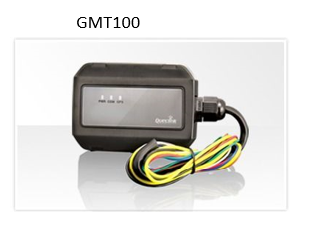
Unidades En uso
Funcionalidades
Las arquitecturas funcionales de las unidades GPS contemporáneas presentan una alta convergencia técnica. En particular, los modelos de la serie GV300 comparten un conector estándar de 16 pines que integra varias funciones, como el bloqueo remoto, la apertura de seguros, el botón de pánico, y la alimentación con un rango de voltaje operativo de entre 8 y 36 voltios. Además, incluye una conexión a tierra y soporta señales de dispositivos de audio, permitiendo la integración de un micrófono y parlantes.


Serie GV300
Actualmente, esta plataforma es la que más se ha utilizado a lo largo de los años. Cuenta con modelos como el GV300W y el GV310LAU. A continuación, se presenta el desglose técnico de las funciones asignadas a cada pin en el conector de 16 pines.
Al observar de cerca las unidades de la serie GV300, encontramos un conector principal y, en uno de los laterales, una infografía que detalla la función de cada terminal. Esta información es vital para la correcta integración de periféricos.
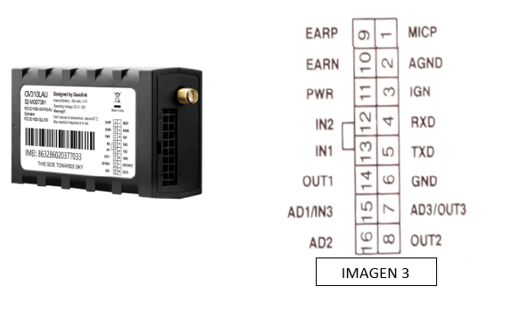
- Pin 1 (Gris): micrófono ( + ) Este pin se usa con el positivo del micrófono en caso que la instalación lo requiera.
- Pin 2 (Gris línea negra): micrófono ( - ) Es la conexión negativa del micrófono.
- Pin 3 (Blanco): Ignición Este pin se conecta a una señal constante de ignición del vehículo, es decir: la señal debe de activarse al momento que el vehículo se encienda y apagarse al momento que el vehículo se apague.
- Pin 6 (Negro): Negativo Este pin se conecta a tierra del vehículo
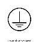
- Pin 8 (Amarillo): Apertura. Envía un pulso negativo (-) momentáneo para la activación del cierre centralizado.
- Pines 9 y 10 (Morados): Parlante. Salidas para audio (micrófono/parlante activo).
- Pin 11 (Rojo): Positivo (+). Alimentación constante (8V - 36V DC). Debe conectarse a una línea que no se interrumpa al apagar el vehículo.
- Pin 13 (Naranja): Pánico. Entrada para pulso negativo momentáneo proveniente del botón de emergencia.
- Pin 14 (Azul): Bloqueo. Salida de señal negativa sostenida para activar el relé de inmovilización.
Modelo GV58LAU
Este dispositivo compacto integra la mayoría de las funciones en un arnés de 6 cables. A diferencia de la serie GV300, los cables están integrados directamente al chasis del equipo.
- Blanco: Ignición
- Rojo: Positivo (+)
- Negro: Negativo (-)
- Naranja: Pánico
- Amarillo: Apertura
- Verde: Bloqueo
Asegúrese de conectar siempre la terminal negativa (Negro) antes de cualquier otra conexión de potencia o señal.
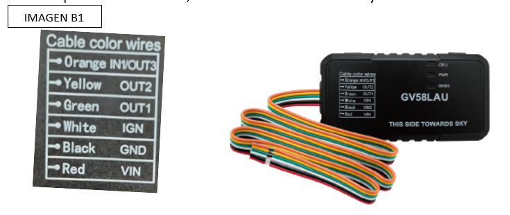
Modelo GV75W (Waterproof)
Diseñado para aplicaciones en condiciones extremas, como motocicletas, cuatrimotos o maquinaria pesada expuesta a la intemperie. Cuenta con protección IP67.
Configuración de Cables GV75W:
- Rojo: Positivo (+)
- Negro: Negativo (-)
- Blanco: Ignición
- Azul: Bloqueo de Motor
Esta unidad presenta una falla en el conector, es recomendable eliminar el conector y hacer las conexiones directas.

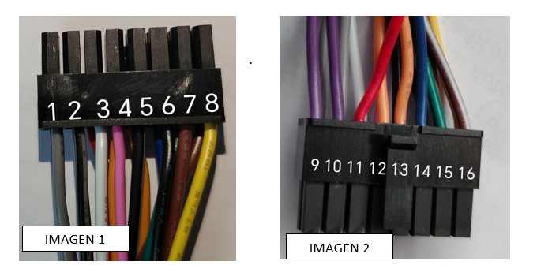
Magnitudes Eléctricas
- Voltaje (V): Diferencia de potencial. 12V (Ligeros), 24V (Pesados).
- Corriente (I): Flujo de electrones (Amperios).
- Potencia (P): P = V × I (Vatios).
- Ley de Ohm: V = I × R. Explica por qué una mala tierra causa caídas de voltaje.
Señales Críticas
- BAT+ (Constante): Siempre presente.
- IGN (Ignición): Presente en ON/START.
- Señales Analógicas: Varían de forma continua (0V a 12V). Ejemplo: Flotador de combustible analógico.
- Señales Digitales: Tienen sólo dos estados (ON/OFF o 0/1). Ejemplo: Botón de pánico o sensor de puerta.
- PWM: Señal pulsante (Luces modernas). No usar para reporte de ignición.
Micro2, Mini y JCASE son estándares modernos. Use siempre Add-a-Fuse.
Una vez identificados los distintos modelos de dispositivos GPS y sus funciones técnicas, procederemos a enumerar el equipo necesario para una instalación profesional.
Desarmadores:
Herramientas básicas para desmontar paneles o partes del vehículo donde se instalará el dispositivo GPS. En la mayoría de los casos, utilizaremos desarmadores de punta de cruz (Phillips) para desmontar paneles y piezas del vehículo. Además, es común emplear desarmadores tipo Torx y hexagonales, así como cubos de 5.5 mm (particularmente para modelos Ford Escape 2008-2012), 7 mm y 10 mm, según las necesidades específicas del vehículo. También usaremos desarmadores planos, útiles para desmontar paneles laterales, tapas de tornillos o incluso para hacer palanca en los seguros plásticos que sostienen algunas piezas.
Probador de línea
Este tipo de herramienta es comúnmente utilizado en trabajos de electricidad automotriz, como en la instalación de dispositivos GPS, para verificar la presencia de voltaje en los cables y conexiones del vehículo. Usos en la Instalación de GPS: Verificación de Corriente: Se utiliza para verificar los cables que suministran corriente constante y aquellos que se activan solo al encender el vehículo y las funciones que se activan con un pulso negativo o positivo, como el bloqueo y la apertura. Esto es crucial para conectar el GPS a una fuente de energía adecuada. Identificación de Tierra: Ayuda a encontrar los puntos de tierra correctos, asegurando que el dispositivo GPS esté adecuadamente conectado. Detección de Fallas: Puede emplearse para revisar si una conexión está fallando, lo que es útil en tareas de diagnóstico o mantenimiento preventivo.
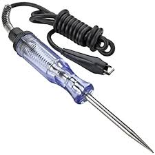

Navaja o Cutter
es una herramienta de corte versátil y esencial en la instalación de dispositivos GPS y en otros trabajos de electricidad automotriz. Se utiliza principalmente para acceder al los cables dentro de las guardas pláticas (tubings), cortar cinta aislante, y realizar ajustes en materiales de instalación.
Pela Cable o Desguarnizador
Es una herramienta fundamental en trabajos eléctricos y, en particular, en la instalación de dispositivos GPS. Su función principal es retirar de manera segura y precisa el aislamiento de los cables sin dañar los conductores internos, permitiendo así realizar conexiones limpias y seguras.
Remachadora
Herramienta utilizada para realizar conexiones eléctricas seguras al crimpar o remachar terminales y conectores en los cables. Posee muescas ajustables para adaptarse a distintos tamaños de terminales y calibres de cables, aplicando presión para asegurar una unión mecánica y eléctrica confiable.
Otras Herramientas
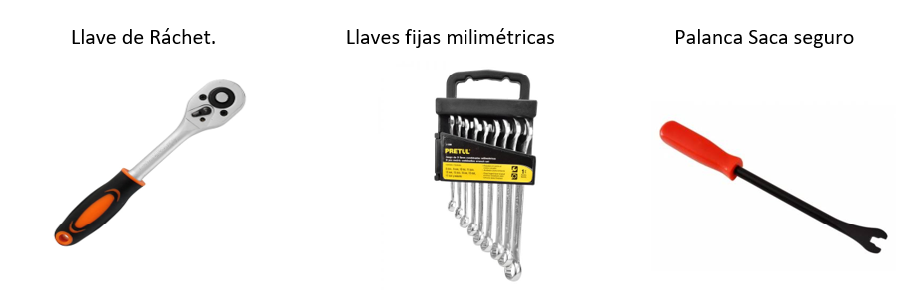
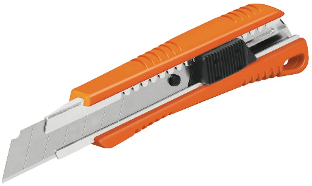
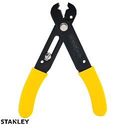

Se debe asegurar mantener las herramientas en un estado de óptimas condiciones para asegurar una instalación apropiada.
Otros materiales utilizados
Inspección de vehículo
Flujo de Trabajo Profesional
1. Preparación de Materiales y Herramientas
Para asegurar una instalación eficiente y sin contratiempos, es fundamental reunir todos los componentes antes de iniciar el trabajo:
- Dispositivo GPS. - Datos de orden de trabajo. - Herramientas. - Materiales consumibles: cinta aislante, conectores, fusibles, bridas. - Relay y pulsador: necesarios para el bloqueo de encendido y el botón de pánico. Es indispensable disponer de todos estos elementos antes de iniciar la recepción del vehículo.
Antes de proceder a encender o realizar pruebas en un vehículo con transmisión manual , es obligatorio verificar que la palanca de cambios se encuentre en posición de NEUTRO y que el freno de emergencia esté totalmente activado. Esto evita movimientos accidentales que podrían causar daños materiales o lesiones graves.


2. Formulario de Orden de Trabajo Datos de la orden de instalación:
Este documento contiene toda la información relevante sobre la instalación, lo cual es esencial para gestionar el proceso de manera eficiente gracias a los datos que proporciona.

A continuación, se ofrece una breve guía para llenar correctamente el formulario de la orden de trabajo. Este documento es fundamental en la recepción del vehículo, ya que permite registrar datos clave del cliente, el estado y características del vehículo, además de información sobre el dispositivo GPS y el técnico encargado de la instalación. Completarlo con precisión asegura una comunicación clara entre el equipo técnico y el cliente, mejorando la calidad del servicio. Antes de llenarlo, se debe contar con la información detallada del vehículo y verificarla para la instalación del sistema GPS. A continuación, un ejemplo de formato de datos de la instalación:
Formulario de Tracklink
Es muy importante llenar las ordenes correctamente con toda la información solicitada en el formulario.
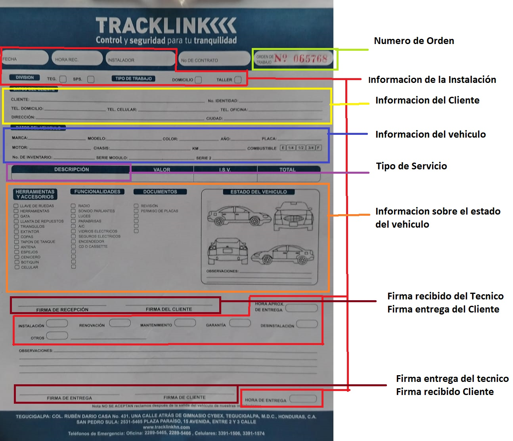
Información del dispositivo GPS
3. Recepción del Vehículo Disponibilidad del Vehículo para la Instalación:
En algunos casos el vehículo puede no estar disponible, para ello es importante confirmar que el vehículo esté libre y no esté sometido a otros trabajos (reparación, lavado o polarizado). - Si el vehículo no está disponible, informar al supervisor o a la persona encargada de la programación de citas. - En caso de que sea necesario mover el vehículo, se recomienda delegar esta responsabilidad al cliente, al encargado, o a una persona autorizada y capacitada para hacerlo. Solicitarlo de manera atenta y respetuosa que trasladen el vehículo al lugar adecuado, sin importar si se trata de un movimiento breve. Esto es especialmente importante en una agencia de vehículos, donde no se aconseja mover vehículos sin autorización.
4. Aproximación Inicial con el Cliente Antes de iniciar la inspección y revisión del vehículo, es esencial seguir un protocolo de acercamiento profesional para establecer confianza y cortesía con el cliente. Este proceso aplica tanto para clientes que visitan el taller como para citas a domicilio. Saludo y Presentación Personal:
- Acercarse al cliente o encargado con un saludo amable y profesional. - Presentarse claramente, mencionando el nombre y el cargo (ejemplo: “Buenos días, mi nombre es [Nombre], soy el técnico encargado de la instalación del dispositivo GPS en su vehículo.”). Explicación del Proceso: - Informar brevemente al cliente sobre el proceso que se va a realizar. Por ejemplo: “Voy a realizar una revisión inicial de su vehículo antes de proceder con la instalación del GPS.” Solicitud de Acompañamiento: - Solicitar amablemente al cliente que lo acompañe durante la revisión preliminar, asegurando transparencia y brindándole confianza. Esto se puede hacer diciendo: “Le agradecería si puede acompañarme mientras realizo la inspección inicial de su vehículo.” Solicitud de Llave del Vehículo: - Solicitar la llave del vehículo de manera cortés para poder iniciar la inspección.
6. Procedimiento estándar de Inspección Con el cliente presente, el técnico deberá seguir el protocolo de inspección detallado en el procedimiento estándar (a continuación), verificando aspectos de identidad del vehículo, funcionalidad eléctrica y estado físico. Es importante explicar al cliente brevemente cada paso para que comprenda el motivo de la inspección y su relevancia para el servicio que se va a realizar I. Confirmación de Identidad del Vehículo:
⚠ - Comparar los datos del vehículo en la orden de trabajo (marca, modelo, número de placa y color) con el vehículo presente. - Verificar que el vehículo coincide con la información y esté disponible para la instalación Inspección inicial: Verificación de Encendido ⚠ - Asegurarse que el vehículo tenga la batería en buen estado y que pueda encenderse. - Identificar si el vehículo es automático o mecánico. - Que la puerta del conductor o del pasajero pueda abrirse sin ningún inconveniente. - Verificar que la palanca de cambios esté en posición neutral (en vehículos mecánicos) y que el freno de emergencia esté activado. II. Procedimiento de Encendido: - Para ambos tipos de transmisión, presionar el freno y, si corresponde, el embrague. - Insertar la llave en la posición de ignición (Imagen C1), observando los testigos del tablero para detectar alguna posible manipulación. - Encender el vehículo y registrar cualquier testigo del tablero que permanezca encendido en la hoja de trabajo. III. Identificación del Voltaje de operación Es fundamental identificar el voltaje operativo del vehículo, ya que este influirá directamente en la selección de los componentes adecuados para la instalación, como el relé. Es especialmente importante en el caso de vehículos pesados, que generalmente operan a 24 voltios, frente a los vehículos ligeros que utilizan sistemas de 12 voltios. Verificación del Sistema de Baterías Para determinar el voltaje en caso de ser vehículo pesado, primero se debe inspeccionar el sistema de baterías del vehículo: Vehículos de 24 voltios: Si el vehículo utiliza dos baterías conectadas en serie, el voltaje total será de 24V, ya que las baterías conectadas en serie suman su voltaje, pero mantienen la corriente.
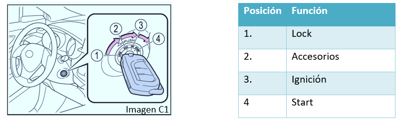

Es importante observar la cantidad de baterías y cómo están conectadas (en serie o en paralelo), ya que esto afectará directamente al voltaje. En el caso de baterías conectadas en paralelo, el voltaje se mantiene constante (12V, 24V, dependiendo de la configuración), pero la corriente se suma. Verificación del Voltaje en la Cabina Si no se puede determinar claramente el voltaje solo mediante la inspección de las baterías, se pueden usar otros métodos adicionales dentro de la cabina del vehículo: - Tacómetro: Algunos vehículos cuentan con un indicador de voltaje en el tacómetro o en el panel de instrumentos. Este indicador puede proporcionar una lectura precisa del voltaje del sistema. - Toma de Encendedor: Verificar el voltaje de la toma de encendedor, utilizando un multímetro para medir el voltaje disponible en esta fuente de energía. - Brillo del Probador de Línea: Utilizar un probador de línea (tester) para verificar el brillo o la intensidad de la luz del dispositivo. Un brillo más tenue podría indicar un voltaje inferior, mientras que un brillo más intenso puede indicar un voltaje mayor. Selección del Relé Adecuado Una vez identificado el voltaje operativo del vehículo, se podrá seleccionar el relé adecuado para la instalación del GPS. Un relé incorrecto podría no funcionar adecuadamente, causar fallos o incluso dañar el sistema eléctrico del vehículo. Es crucial elegir un relé que esté diseñado específicamente para operar con el voltaje identificado en el vehículo (12V o 24V)
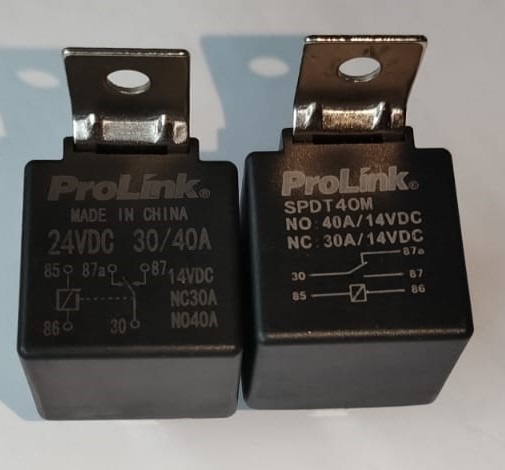
IV. Verificación de Testigos en el Tablero. - Inspeccionar cuidadosamente el tablero y observar si hay algún testigo encendido, como: V. Verificación de Funciones Eléctricas ⚠ Importante: Revisar cada uno de los componentes eléctricos del vehículo y registrarlo en la orden de trabajo.
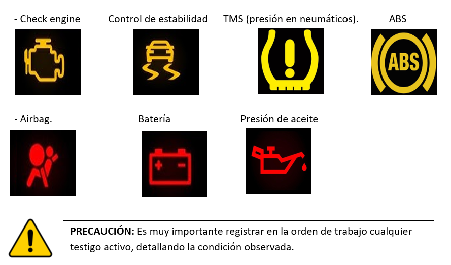

VI. Aspectos y funcionalidades Los siguientes aspectos y funcionalidades requieren ser verificadas al momento de inspeccionar un vehículo:
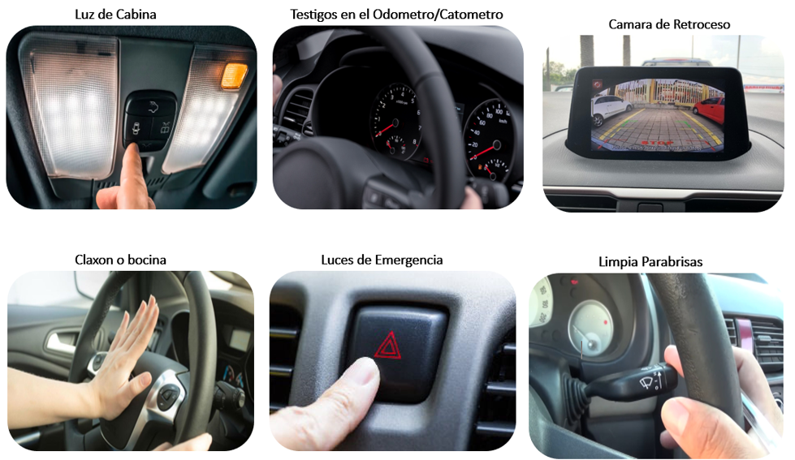
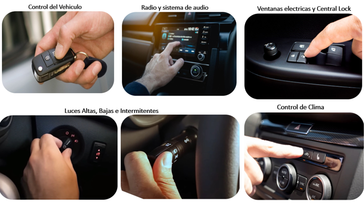
7. Inspección Física del Interior del Vehículo I. Condiciones Generales del Interior:
- Revisar que no faLTEn elementos como plásticos, tapas o paneles. Es fundamental verificar el estado físico de la cabina antes de realizar la instalación del GPS. revisar que los plásticos internos estén en buen estado, sin rayaduras, fracturas o señales de manipulación. - Inspeccionar el parabrisas Se verifica el estado del parabrisas para detectar fisuras o astillamientos, así como el estado del polarizado, para detectar burbujas, rayones o quemaduras - Inspección de Tapizados y Alfombras: -Se deben revisar los asientos para detectar si están sucios, manchados; y asegurar que los asientos puedan moverse y que el respaldo sea ajustable, además sus funcionalidades en caso de poderse ajustar eléctricamente. III. Revisión de Herramientas: Confirmar la presencia del kit de herramientas, normalmente ubicado en la cajuela o bajo el asiento trasero (en el caso de pickups), También es importante confirmar la presencia de la llanta de repuesto, la cual suele ubicarse en la cajuela del vehículo o debajo de la paila en el caso de las pickups.
Registrar cualquier anomalía en el funcionamiento de estos componentes en la orden de trabajo.


8. Inspección Física del Exterior del Vehículo 1. Revisión de la Carrocería:


Aspectos a considerar: - Inspeccionar cuidadosamente la carrocería en busca de abolladuras, rayones o piezas faltantes. Condiciones de Componentes Externos: - Verificar que los faros delanteros y traseros funcionen correctamente. - Revisar retrovisores, insignias, y asegurarse de que las llantas, incluida la de repuesto, estén en buenas condiciones. Registrar cualquier detalle ⚠ observado en la orden de trabajo.
9. Comunicación de Resultados al Cliente I. Informe de Observaciones:
Explicar al cliente o encargado los detalles encontrados en la revisión. Esto es crucial para que el cliente esté al tanto de cualquier posible anomalía o condición preexistente del vehículo. II. Solicitud de Información de Contacto: Solicitar un número de teléfono al cliente para poder contactarlo en caso de que surja algún inconveniente o actualización durante la instalación y asegurarse de contar con este número para notificar al cliente cuando el trabajo haya finalizado. III. Confirmación y Firma del Cliente: - Pedir al cliente que firme la orden de trabajo en el área correspondiente, al lado de la firma del técnico, confirmando que está informado sobre el estado del vehículo. 10. Inicio del Procedimiento de Instalación Con el cliente informado y habiendo completado todos los pasos de inspección, se procede a la instalación del dispositivo GPS conforme a los estándares establecidos. Es importante, además, que el técnico instalador cumpla con todos los aspectos de seguridad y cuidado necesarios durante el proceso.


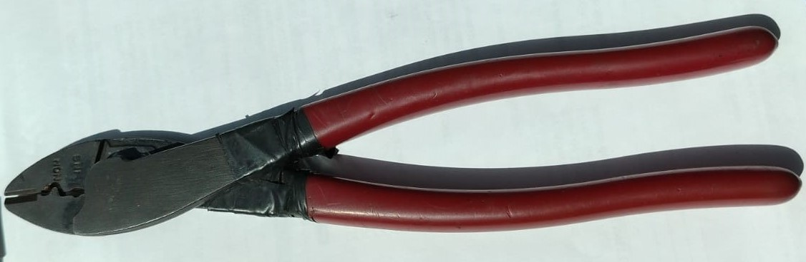
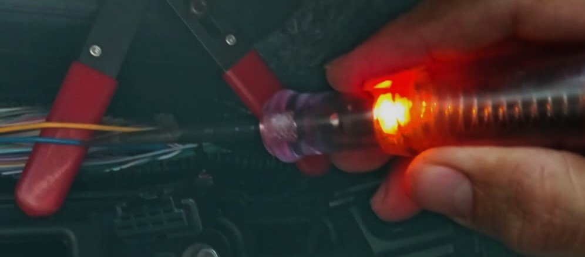
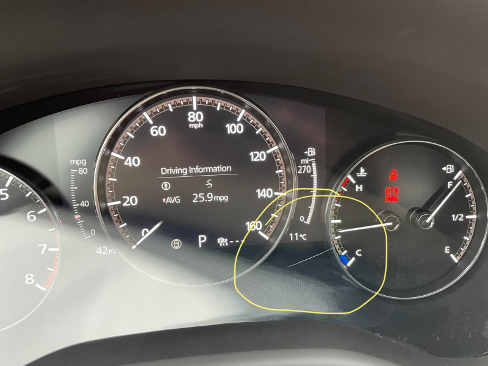
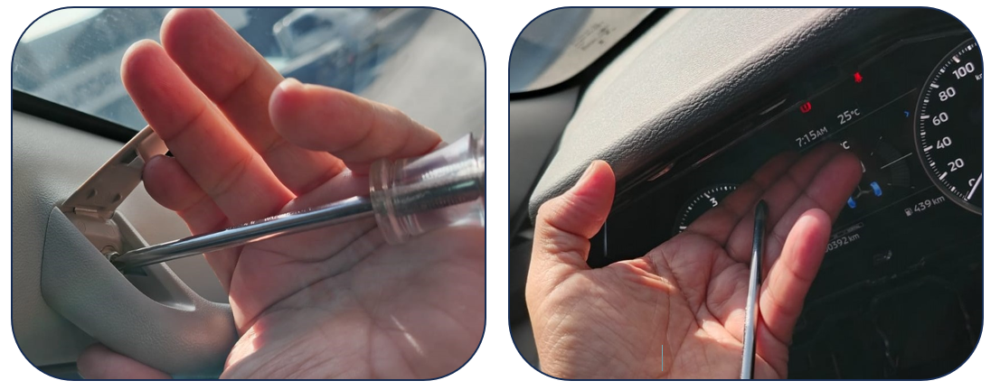
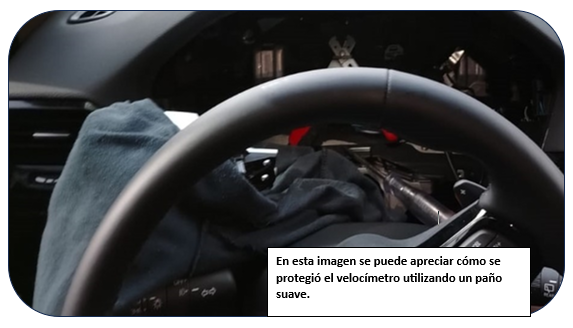
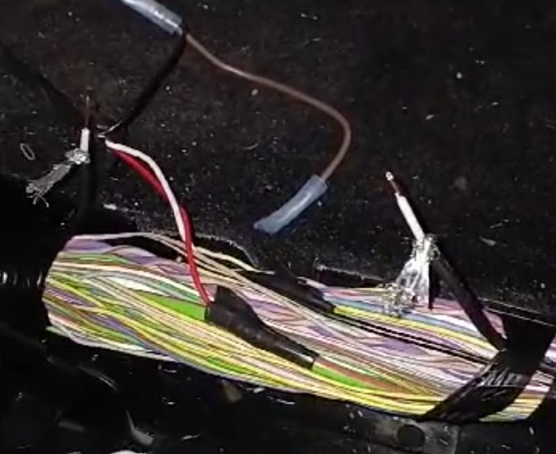


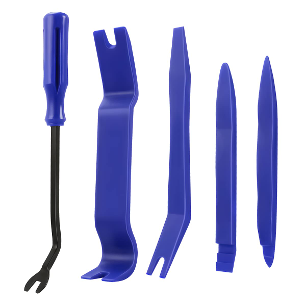

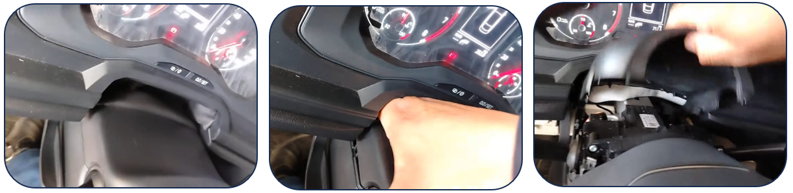


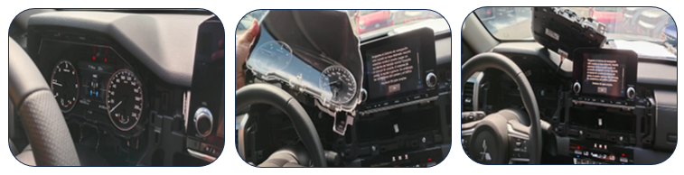
El arnés eléctrico del GPS es el componente crítico que integra el dispositivo con la arquitectura eléctrica del vehículo. Un ensamble correcto garantiza no solo la operación continua del rastreo, sino también la seguridad contra cortocircuitos o fallos en el sistema de encendido.
Ensamble Básico del Arnés
Una vez definidos los componentes (relés, botón de pánico, micrófonos), procedemos a la integración física del arnés:
- Planificación: Determine la ubicación final del GPS para calcular las longitudes de cable necesarias.
- Agrupación por Función: Organice los cables en grupos (Alimentación, Señales de Entrada, Salidas de Control).
- Preparación de Terminales: Utilice terminales remachables para las conexiones al relé y puntos de tierra.
- Protección: Aplique encintado profesional (estilo automotriz) para proteger los empalmes y dar rigidez estructural al mazo de cables.
Protocolo para Unidades Serie GV300
Para los modelos GV300W y GV310LAU, el protocolo de ensamble estándar es:
- Pin 11 (Rojo) y Pin 6 (Negro): Línea principal de energía.
- Pin 14 (Azul): Conexión al Pin 86 del relé de bloqueo.
- Pin 3 (Blanco): Conexión a la señal de ignición del vehículo.
- Pin 12 (Naranja): Conexión al botón de pánico.

Operación Detallada del Relé (Relay) de 5 Pines
El relé es un interruptor electromecánico fundamental para el corte de ignición. Su funcionamiento se basa en una bobina que, al ser energizada, genera un campo magnético que mueve un contacto físico.
- Pin 85 y 86: Corresponden a los extremos de la bobina. En una instalación estándar, el pin 85 se conecta a una señal positiva (12V) y el 86 a la salida de bloqueo del GPS (pulso negativo). Al activarse el bloqueo desde la plataforma, la bobina se energiza.
- Pin 30 (Común): Es el punto de entrada de la señal que deseamos interrumpir. Debe conectarse al extremo del cable de ignición que proviene del llavín.
- Pin 87a (Normalmente Cerrado - NC): En reposo, el pin 30 está conectado internamente al 87a. Aquí se conecta el cable que continúa hacia el sistema de encendido del motor. Al activarse el relé, esta conexión se abre, cortando el flujo eléctrico y apagando el vehículo.
- Pin 87 (Normalmente Abierto - NO): Se utiliza para aplicaciones donde se desea activar un componente (como una sirena o luces) cuando el bloqueo está activo.
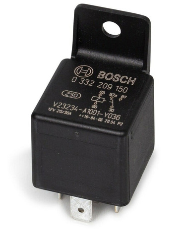
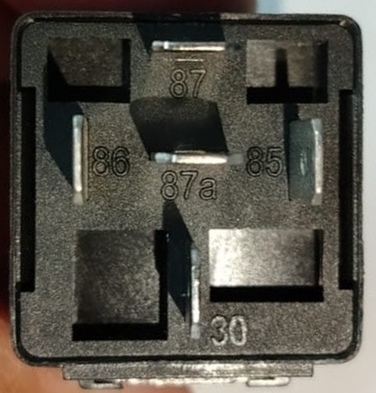
- 1. Pin 30: Conéctalo a la línea de alimentación de ignición del vehículo. Este pin es la entrada de corriente al relay.
- 2. Pin 87a: Conéctalo al circuito de ignición del vehículo (por ejemplo, a la línea que lleva la corriente al encendido).
- 3. Pin 87: Deja este pin desconectado o úsalo para una función adicional.
- 4. Pin 85: Realiza un puente con el pin 30 para que reciba la corriente de ignición.
- 5. Pin 86: Este pin será nuestro activador, aquí conectaremos la salida de señal negativa de nuestro GPS.

Estrategias de Inmovilización
- Corte de Ignición: Inmediato. Puede generar DTC.
- Corte de Bomba: Gradual y más limpio electrónicamente.
- Corte de Motor de Arranque: El más seguro en carretera (sólo impide el encendido).
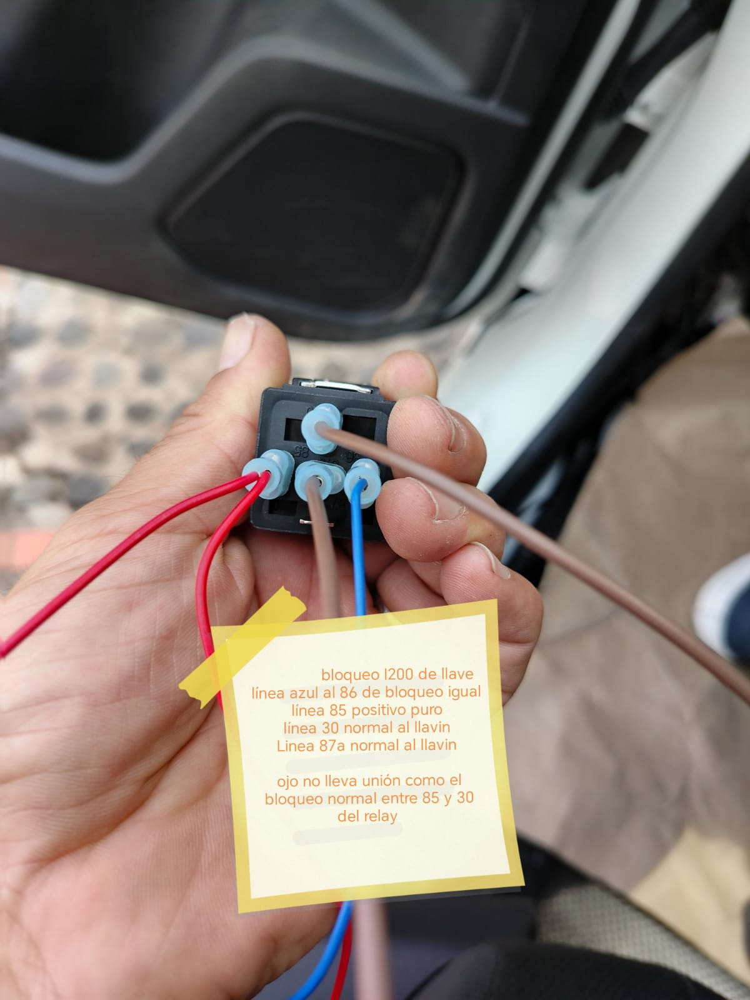
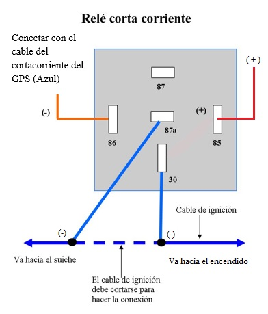
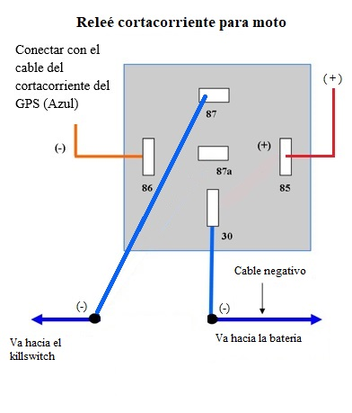

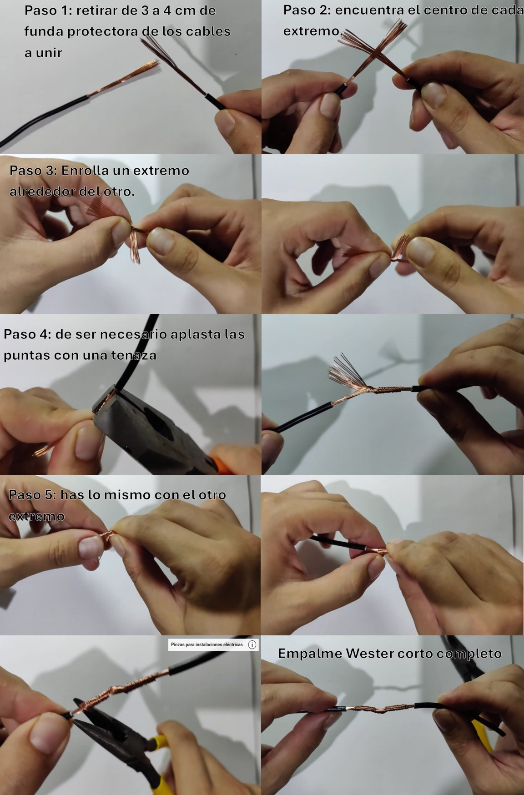


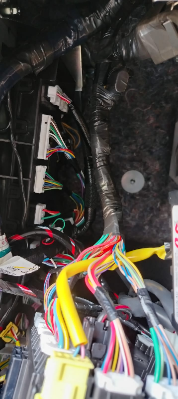


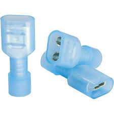


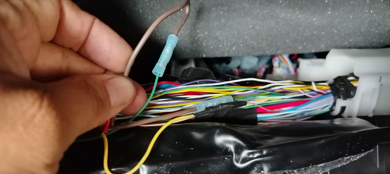

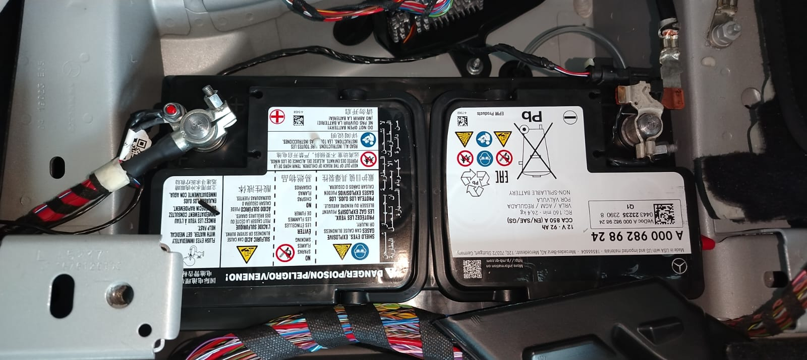
Botón de Pánico Estos pulsadores funcionan como dispositivos de alerta al ser presionados, emitiendo generalmente una señal negativa. Al activarse, el pulsador envía un pulso negativo que dura únicamente mientras se mantiene presionado. Características principales: Función temporal La señal se envía solo durante el tiempo de presión, lo que permite alertas momentáneas o señales intermitente El botón incluye terminales con cables de longitud suficiente para una instalación sin problemas. Es recomendable seleccionar cuidadosamente la ubicación de instalación antes de cortar o ajustar el cable. Polaridad: Generalmente, estos pulsadores no están polarizados, lo que significa que cualquiera de sus dos terminales puede funcionar como entrada o salida, sin importar el tipo de corriente utilizada. Esto los hace versátiles en distintas aplicaciones, ya que no requieren una conexión específica de polaridad. Sin embargo, en sistemas de alarma o GPS, estos pulsadores suelen emplearse para enviar un pulso de señal negativa. Esto es útil en sistemas que

requieren esta polaridad para activarse o generar una alerta, facilitando una integración adecuada con el resto de componentes del sistema. Instalación: La integración básica de este periférico consiste en el empalme de una de sus terminales al cable del GPS destinado a la señal de entrada negativa de pánico (Naranja en la mayoría de modelos). La otra terminal debe conectarse a una señal negativa constante (tierra). Si el pulsador tiene un código de colores para identificar las terminales (como rojo y negro), es recomendable seguir esta identificación, conectando cada terminal de acuerdo con su color: el negro generalmente debe ir a un negativo constante. Además, en muchos casos, la terminal para la señal negativa constante suele empalmarse con el negativo del GPS, permitiendo que ambos dispositivos compartan la misma conexión a tierra. Esto asegura una instalación ordenada y confiable, reduciendo posibles problemas de conexión y mejorando la estabilidad del sistema, como se puede apreciar en la imagen. Es importante recordar que este periférico debe estar oculto pero accesible para el conductor del vehículo. Esto requiere un enfoque creativo e intuitivo para encontrar un lugar práctico donde el botón esté disponible cuando se necesite, pero fuera de la vista para mantener su discreción y evitar manipulaciones no autorizadas A continuación, algunas técnicas para ocultar el botón en lugares ideales fuera de la vista y accesibles:
- Debajo del volante: Coloca el botón en la parte inferior del tablero, cerca del volante. Este lugar permite fácil acceso para el piloto mientras permanece fuera de la vista.


- Detrás de una tapa o panel desmontable: Aprovechando cubiertas o tapas de fusibles.
- En la base del asiento: En la parte lateral, discreto pero accesible para el piloto.
- Dentro de la consola central: Permite acceso directo sin comprometer la visibilidad exterior.
Configuración de Instalación Estándar
Para una instalación limpia, se recomienda:
- Tomar medidas precisas de donde estará oculto el dispositivo antes de cortar cables.
- Separar los cables que no se utilizarán y cortarlos en ángulo diagonal para evitar contactos accidentales.
- Mantener una longitud de reserva para permitir futuras expansiones o mantenimientos.
Identificación Técnica de Conductores y Señales
La correcta identificación de las líneas eléctricas y de señal es un paso crítico para garantizar una instalación segura, funcional y profesional. El técnico debe utilizar siempre equipo de medición adecuado (multímetro digital o probador de línea automotriz) y seguir estrictamente los protocolos para prevenir fallos en los sistemas electrónicos del vehículo.
1. Identificación del Cable de Alimentación Positiva Constante (+12V)
Es fundamental localizar un conductor que suministre un voltaje constante de 12V directamente desde la batería o un punto de distribución principal. Se debe asegurar que este voltaje no desaparezca ni inmediatamente ni varios minutos después de apagar el vehículo (evitando líneas con retardo o temporizadas).
Procedimiento recomendado para vehículos con sistema de cierre centralizado (Central Lock):
- Apagar el vehículo y retirar la llave del interruptor de encendido.
- Asegurarse de que todas las puertas y el maletero estén completamente cerrados.
- Para vehículos con botón sensor de puerta en el marco: retirar temporalmente el tornillo que lo sujeta para que el vehículo detecte el cierre total de las puertas.
- Para vehículos sin sensor visible: introducir cuidadosamente un destornillador (preferiblemente de cabeza plana) en el pestillo de la cerradura de la puerta abierta para simular mecánicamente que se ha cerrado.
- Utilizando el control remoto original del vehículo, presionar dos (2) veces el botón de cierre de seguros.
- Tras escuchar la confirmación sonora de activación de la alarma, esperar un tiempo prudente de entre 3 y 5 minutos .
Una vez transcurrido este tiempo, la mayoría de los módulos electrónicos del vehículo entrarán en modo de reposo (Sleep Mode), permaneciendo activas únicamente las líneas de alimentación constante auténtica.
Recomendación de búsqueda: Inicie la inspección en los cables de mayor calibre del mazo principal. Antes de intervenir, verifique que el conductor NO corresponda a ninguno de los siguientes tipos:
- Cable coaxial.
- Cable entrelazado de comunicación (Twisted pair).
- Fibra óptica.
- Líneas de red CAN (CAN Bus) o sistemas de comunicación multiplexada.
2. Identificación del Cable de Apertura de Seguros
Muchos vehículos modernos incorporan sistemas de Central Lock avanzados donde la señal de apertura de seguros puede variar sustancialmente dependiendo de si el vehículo se encuentra encendido o apagado.
Para identificar correctamente el cable de apertura funcional con el vehículo apagado, debe realizarse el mismo procedimiento de simulación de cierre y espera (Sleep Mode) utilizado para localizar la alimentación constante.
Procedimiento de verificación de doble estado:
Una vez que haya identificado el cable funcional con el vehículo apagado, realice la siguiente validación:
- Encender el vehículo.
- Cerrar nuevamente todas las puertas.
- Verificar si el mismo cable identificado continúa realizando la función de apertura de seguros con el vehículo encendido.
Si el cable deja de funcionar cuando el vehículo está encendido, será necesario repetir el procedimiento de búsqueda con el vehículo en marcha para identificar la segunda línea de apertura necesaria para este estado.
Consideraciones importantes sobre la conexión:
- No se recomienda unir ambos cables directamente a la misma salida de apertura del dispositivo GPS.
- Aunque en algunos vehículos esta unión directa puede parecer funcionar, en otros puede provocar fallos críticos en el módulo de cierre centralizado o impedir el funcionamiento correcto de los seguros.
- En caso de ser estrictamente necesario elegir, se recomienda utilizar únicamente el cable que permita la apertura de seguros con el vehículo apagado.
- Si se requiere compatibilidad total en ambos estados (encendido y apagado), deberá utilizarse un relé (relay) configurado como conmutador , permitiendo enviar la señal de apertura al cable correspondiente según el estado de la ignición del vehículo.
Nota técnica adicional: Durante las pruebas de apertura con el vehículo encendido, es posible que la alarma del vehículo se active mientras el vehículo permanece apagado. En esos casos, únicamente será necesario presionar dos veces el botón de apertura de seguros del control remoto para desactivar nuevamente la alarma.
3. Identificación de Señales en el Interruptor de Encendido (Llavín)
Para la correcta conexión de las funciones de ignición y bloqueo de motor, identifique los siguientes cables en el interruptor principal:
- Positivo de Entrada (12V+): Presenta voltaje constante incluso sin la llave insertada. Se identifica conectando el probador a tierra y tocando los cables con el vehículo apagado.
- Accesorio (ACC): Se activa cuando la llave gira a la primera posición. Alimenta sistemas no críticos como el radio y el ventilador.
- Ignición (IGN): Se activa en la posición ON. Es el cable responsable de mantener el vehículo encendido. Para validarlo, verifique que la señal sea constante y no parpadee ni se interrumpa cuando se gira la llave a la posición de arranque (START). Si parpadea, es una señal de accesorios o falsa ignición.
- Arranque (START): Proporciona un pulso de 12V únicamente mientras se mantiene la llave en la posición de arranque para accionar el motor.
Prueba de confirmación de Ignición: Si tiene dudas, realice una prueba de corte. Con el vehículo apagado, corte el cable sospechoso e intente encenderlo. Si el vehículo no arranca o se apaga inmediatamente, ha identificado el cable correcto para el corte de motor.
Los vehículos modernos usan redes multiplexadas para reducir cableado.
- CAN BUS: Par trenzado (H/L). Nunca pinchar con lámpara de prueba.
- BCM: Módulo de habitáculo. Fuente ideal de señales de seguros.
Nunca toque cables NARANJA. Peligro de electrocución.
Tabla de Fallas Comunes
| Falla | Acción |
|---|---|
| Sin GPS | Verificar orientación de antena (Cielo). |
| No reporta | Verificar LED celular y saldo SIM. |
Fotos de Certificación
- Toma de energía
- Corte de motor
- Tierra chasis
Caso 1: Interferencia por parabrisas térmicos (malla metálica).